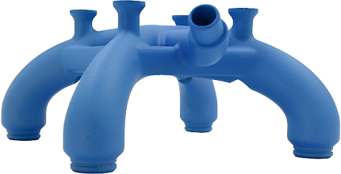
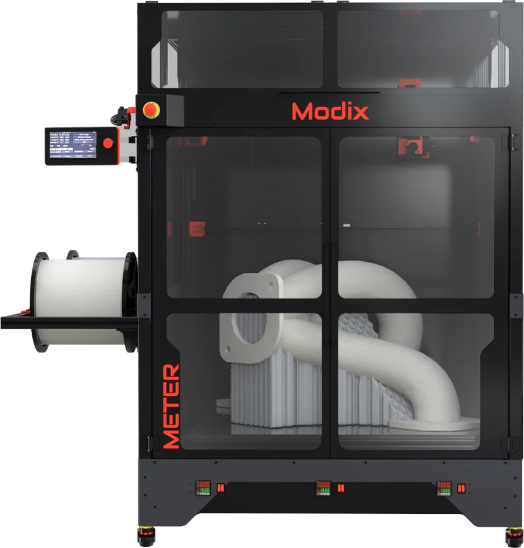
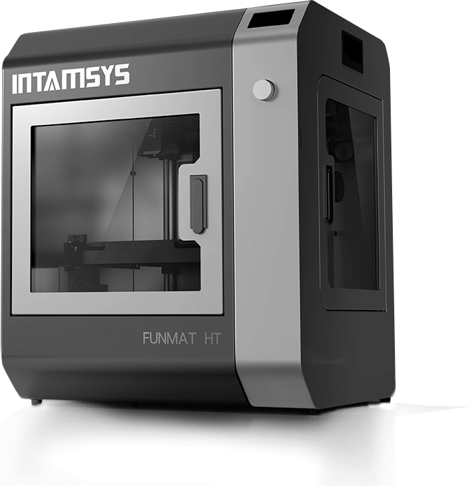
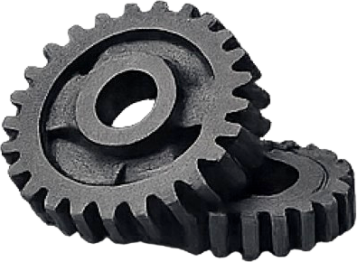

4 Ökosysteme.
Eine Werkstatt.
Jede Technologie ist ein vollständiges Ökosystem: ein Verfahren, seine Maschinen, seine Werkstoffe. 11 Maschinen und 29 Werkstoffe, so geordnet, dass Sie die richtige Kombination auf einen Blick finden.
Festes Nylonteil, feine Körnung, freie Formen
2 Maschinen · 10 Werkstoffe↓SchmelzschichtungFDMVom mehrfarbigen PLA bis zum Hochleistungs-PEEK
5 Maschinen · 12 Werkstoffe↓Stereolithografie (Harz)SLAGlattes, hochdetailliertes Teil
1 Maschine↓CNC-ZerspanungCNCMassives Teil, präzise Maße, schöne Oberfläche
1 Maschine · 7 Werkstoffe↓Welche Technologie wofür?
Ein Funktionsteil aus Nylon, komplexe Formen oder eine Kleinserie
SLS →Sie brauchen…Einen schnellen Prototyp, ein großes Teil, Mehrfarbigkeit oder einen Hochtemperatur-Werkstoff
FDM →Sie brauchen…Sehr feine Details und eine glatte Oberfläche: Modell, Figur, Sichtteil
SLA →Sie brauchen…Ein Metallteil oder sehr präzise Passungen
CNC →SLS
Ein Laser schmilzt Nylonpulver Schicht für Schicht. Das umgebende Pulver stützt das Teil: keine Stützen.
- Funktions- und mechanische Teile
- Komplexe Formen, innere Kanäle, integrierte Scharniere
- Kleinserien: Dutzende Teile pro Zyklus
- Schlag- und verschleißfeste Teile




FDM
Eine Düse trägt geschmolzenen Kunststofffaden Linie für Linie auf, wie ein computergesteuerter 3D-Stift.
- Schnelle, günstige Prototypen
- Sehr große Werkstoffauswahl, von PLA bis PEEK und ULTEM
- Große Teile (Modix Big Meter)
- Mehrfarbige und Multimaterialteile

Bambu Lab H2C
Multimaterialdruck
Datenblatt ansehen →
Bambu Lab X1C
3D-Druck für Serien
Datenblatt ansehen →
Prusa Core One
Schnelles industrielles Prototyping
Datenblatt ansehen →
Modix Big Meter
Großformatiger 3D-Druck
Datenblatt ansehen →
INTAMSYS Funmat HT
Industrielle Werkstoffe
Datenblatt ansehen →



SLA
Ein flüssiges Harz härtet unter UV-Licht Schicht für Schicht aus, für maximale Detailtreue.
- Sehr feine Details
- Glatte Oberflächen direkt aus der Maschine
- Modelle, Figuren, Designprototypen
- Urmodelle für den Formenbau

CNC
Ein Fräser trägt Material aus einem Vollblock ab: Das Teil wird aus dem Vollen gefräst, aus Metall oder technischem Kunststoff.
- Metallteile
- Präzise Passungen und Bohrungen
- Mechanische Teile, die Verschleiß oder Hitze ausgesetzt sind
- Platten, Halterungen, Kleinserien


Außerdem: 3D-Scan & Lasergravur

Ihr Teil, gefertigt.
Senden Sie Ihre 3D-Datei oder beschreiben Sie Ihren Bedarf: Sofortangebot mit Datei, individuelles Angebot innerhalb von 24 h.